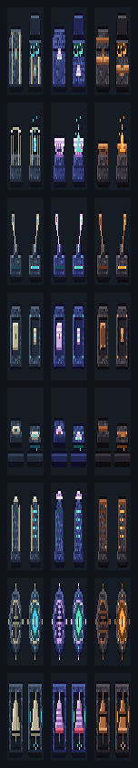

modに関わるブロック (宝の箱・休み場所の火・レバー・ボタン・感圧板・碑・封印・鐘) を、バニラとは別の専用ブロックにして、「これはmodの要素だ」と気づけるようにする案です。どれも「巨像の遺物」の共通の様式 (彫った石の枠・素材の象嵌・光る一本の筋) で、素材と光の色だけが 3 案で違います。各ブロック 32×32 のドット絵で、1 枚の中の左右が 2 つの状態です。ブロックごとに好きな案を選べます (混ぜてもよい)。どこで使っているかの一覧は docs/review/mod_blocks_audit.md。ゲームのブロックはまだ差し替えていません。

宝のキャッシュ (岩鯨の左右の尾びれなど)。向きあり・開く蓋・光る錠
休み場所のたき火の代わり。冷えた / 灯った
仕掛けのレバー。入にすると台座の溝が光る
押す仕掛け用 (今後)。押すと沈んで輪が光る
踏む仕掛け。踏むと沈んで縁が光る
看板の代わりの碑。目を向けると字幕に文が出る。暗い / 光る
封印 → 越えた印。※別の人が作っている「試練を越えた印」ブロックには、見た目の候補としてだけ使えます
鐘楼の謎の鐘。鳴る間は音の輪が光る